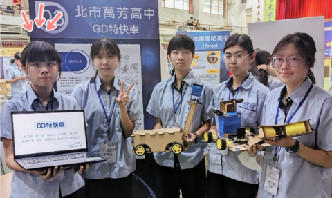

數位學習實驗班的挑戰與成長
進入數位實驗班
我目前就讀於臺北市立萬芳高中數位學習實驗班，這是一個專注於科技創新與跨域學習的特殊課程。在這裡，我學習了程式設計、機電整合以及各種新興技術的應用，這些課程不僅拓展了我的視野，也讓我確定了未來在電機工程領域發展的目標。
技術能力的提升
在實驗班的學習過程中，我參與了多個專案，學習如何將程式設計與硬體整合，打造具有實際功能的系統。這些實作經驗讓我掌握了實作應用與時間管理的核心技能，也培養了我解決問題的能力。
團隊合作與競賽收穫
實驗班強調團隊合作，我們經常以小組形式參與競賽與專案開發。我在多項全國性比賽中獲得佳績，例如臺北市 STEAM 競賽以及台北市113年度生活科技學藝競賽。這些經歷讓我學會如何與團隊成員分工合作，共同克服挑戰。
